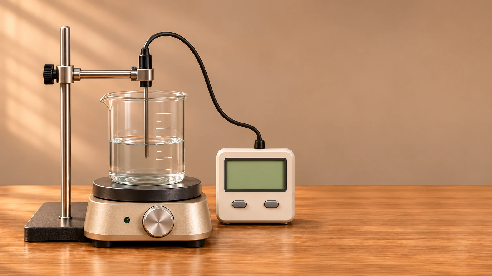
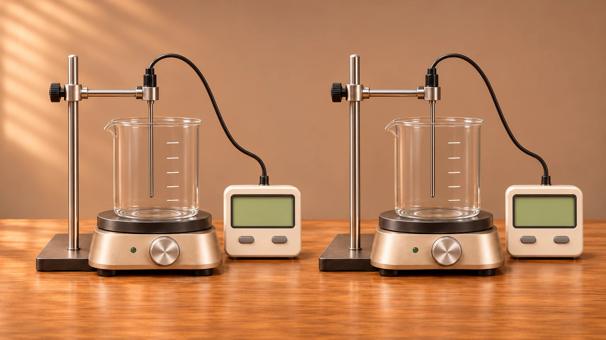
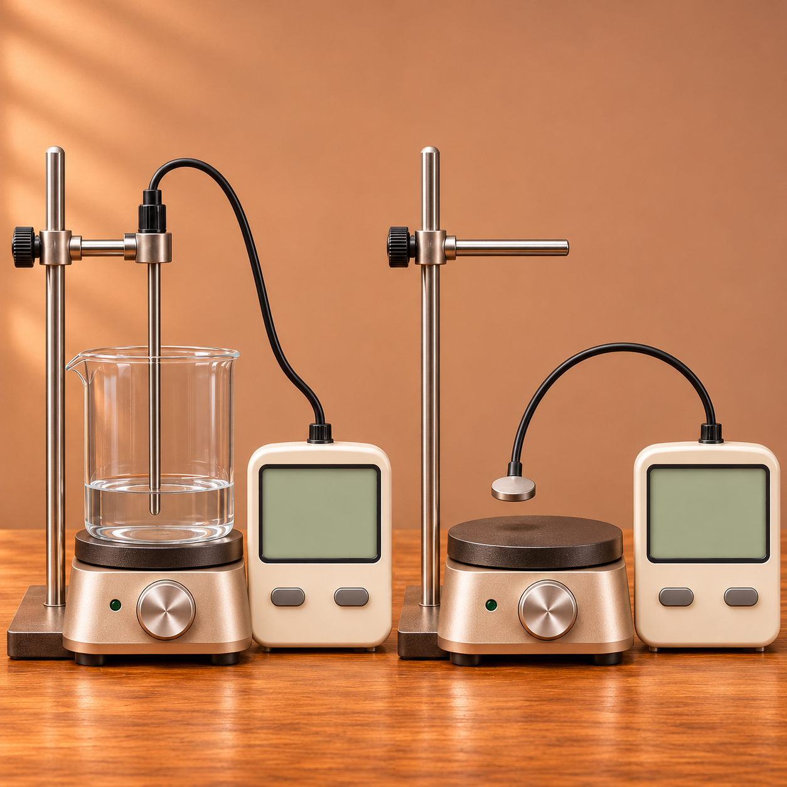
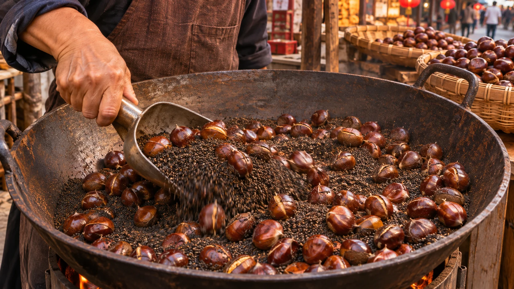
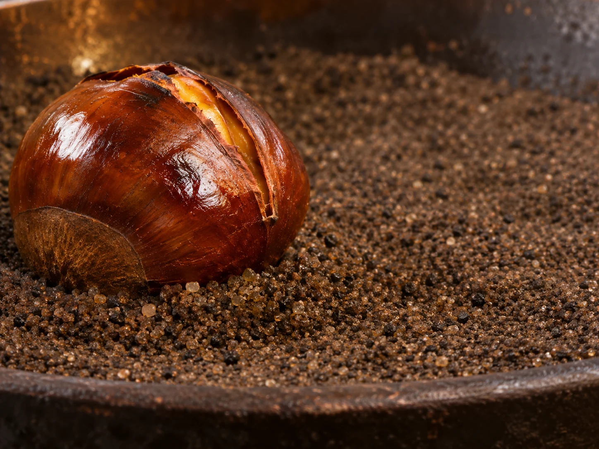
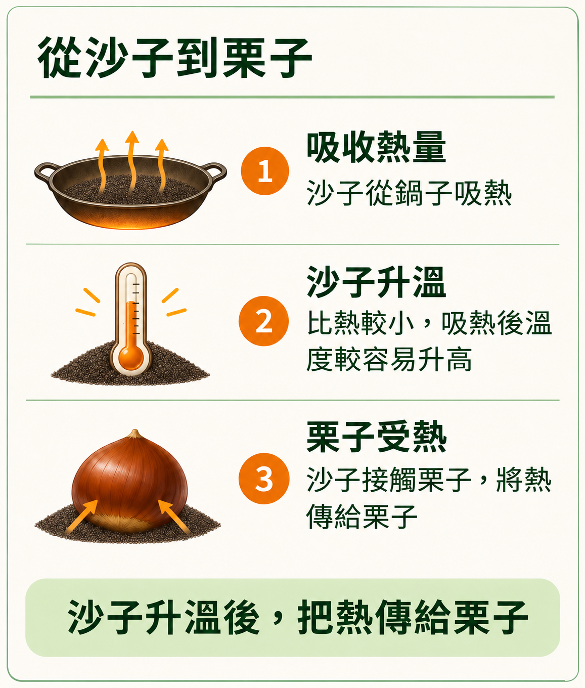
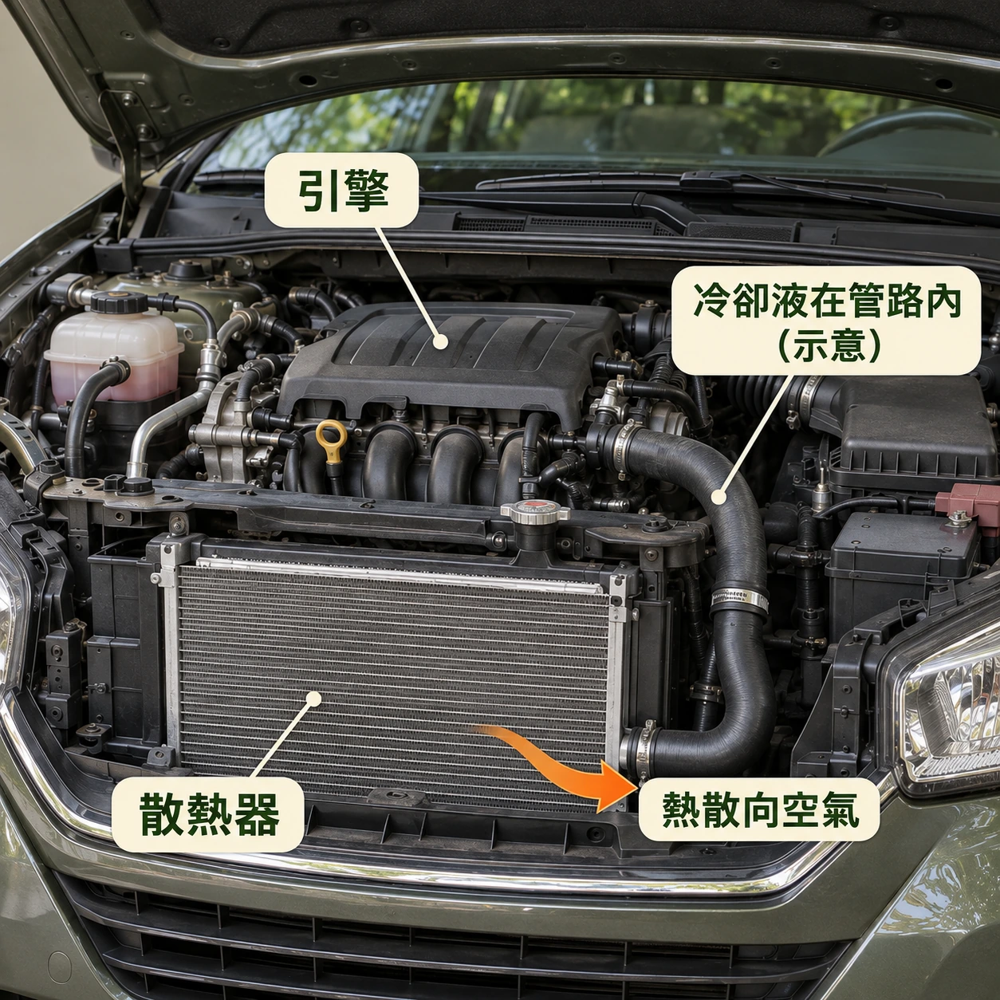
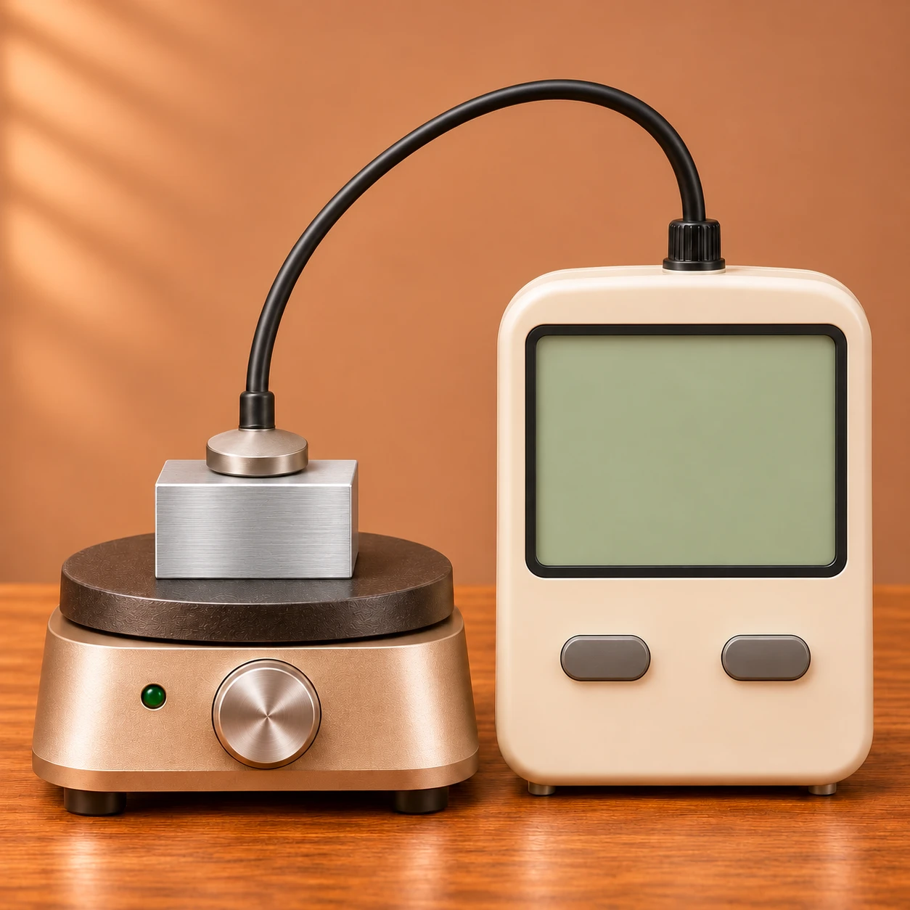

水
原始數據100 g 升高 10°C，需要 1,000 cal
算式1,000 ÷ 100 ÷ 10 ≈ 1
結果每 1 g 升高 1°C 約需 1 cal
小葵和阿公經過糖炒栗子攤，看見老闆不停翻炒鍋裡的栗子和砂子。小葵想起平常煮東西時，食物是在熱水裡受熱的，便好奇：鍋裡的砂子和煮東西用的水，作用一樣嗎？為什麼炒栗子要用砂子，而不用水呢？
熱量單位：從 100 g 水的升溫認識「卡」
煮東西時，水會變熱。水溫升高 1°C，需要多少熱量呢？
讓 1 g 水升高 1°C，約需要 1 cal 的熱量。cal 讀作「卡」，是熱量的單位。

已量取 100 g 水目前水溫 − 起始水溫 ＝ 溫升
正在準備器材畫面…
100 g 是 1 g 的 100 倍，所以 100 g 水升高 1°C，約需要 100 cal 的熱量。
| 水量 | 約需吸收的熱量 |
|---|---|
| 1 g 水 | 1 cal |
| 100 g 水 | cal |
熱量依模型估算；溫度計提供水溫讀值。
先將空燒杯在電子秤上歸零，再量取 100 g 水。溫度探針浸入水中，不碰杯底或杯壁，並以攪拌使水溫較均勻。畫面呈現的是生成的虛擬器材，並非實驗錄影。
模型分開計算水吸熱、玻璃容器吸熱與向 20°C 環境散熱；假設水與容器充分達到同溫。採水的近似比熱、容器熱容量 42 J/°C、有效供熱 20 W、散熱係數 0.5 W/°C；有效供熱不等於加熱板的額定功率。
動畫加速 4 倍，到 21°C 停熱；完成後保留當次讀值，不繼續模擬冷卻，也不呈現探針反應延遲與停熱後餘熱。100 g 水吸收約 100 cal 是模型換算，沒有將溫度計當作熱量計。
1 kcal（大卡）＝1,000 cal（卡）。J（焦耳）也是能量單位，1 cal 約為 4.2 J。
改變單位，並不會改變實際傳遞的能量，就像同一段長度能用公分或公尺表示。
熱量與溫升：固定水量，比較吸收熱量
100 g 水吸收 100 cal，會升高 1°C。如果這份水吸收 200 cal，溫度會升高幾度呢？
這份 100 g 的水吸收 200 cal，溫度會升高 2°C。
可自行輸入100～3,000 cal（含小數）；更換目標後，從20°C重新比較。
請輸入100～3,000 cal的有效數字。
橘點連續移動並留下觀察點；數字稍作停留，方便讀取。
正在準備器材畫面…
| 水吸收熱量 | 水溫 | 溫升 |
|---|
熱量為模型估算；容器吸熱與散熱另計。器材為 AI 情境示意，動畫已加速。
同一份 100 g 水
依目前設定| 水吸收的熱量 | 100 cal | 200 cal | 300 cal |
|---|---|---|---|
| 升高的度數 | 1°C | 2°C | 3°C |
吸收的熱量變成原來的 n 倍，升高的度數也變成原來的 n 倍。
這種關係叫做「成正比」。
另取100 g、20°C的水，沿用第一區器材，假設充分攪拌且水與玻璃容器同溫。水吸熱、容器吸熱與向20°C環境散熱分開計算；20 W有效供熱、42 J/°C容器熱容量與0.5 W/°C散熱係數均為教學設定，非實測校正。
目標是水實際吸收的累計熱量，不是加熱器總供能；溫度計只提供水溫，熱量由模型估算。範圍100～3,000 cal配合本模型可達的加熱區間，水最高約50°C，無狀態改變。橫軸是水累計吸熱量，縱軸是從20°C起算的溫升，並非水溫或時間。
一次連續加熱到目標才停止，沿途自動留點，最後的小數終點亦會保留；預設1,000 cal時每100 cal留點，其餘目標自動調整取樣間距。全程同一加熱設定、30倍動畫加速，不模擬探針遲滯、停熱餘熱與等待冷卻。換區或背景中斷保留讀值，不自動續熱；手動繼續。更換目標或重新觀察會清除本次紀錄並從20°C開始。
水量與溫升：固定吸收熱量，比較不同水量
剛才是 100 g 的水，如果換成 200 g，甚至 300 g 的水，也都吸收 1,000 cal，溫度會升高幾度呢？
吸收相同熱量時，水量越多，升高的度數反而越少。
都是水・初溫20°C・水吸收1,000 cal
可自行輸入100～350 g
請輸入100～350 g的有效水量。

曲線：推算關係
空心點：預測位置實心點：目前升溫
正在準備器材…
曲線與加熱讀值為教學模型推算；器材為AI示意，動畫已加速。
都是水，每份各吸收1,000 cal
點選案例，開始驗證| 水量 | |||
|---|---|---|---|
| 預期升高的度數 | 10°C | 5°C | 約3.3°C |
吸收相同熱量時，水量變成原來的 n 倍，升高的度數就變成原來的 n 分之一。
水量與升高的度數，這種關係叫做「成反比」。
水量可輸入100～350 g及小數，範圍配合約400mL燒杯與探針浸水位置。更換水量代表重新量取另一份20°C的水，水位只在準備時調整，加熱中水量固定。
沿用原水、容器及散熱模型：20 W有效供熱、42 J/°C容器熱容量、向20°C環境散熱係數0.5 W/°C。水實際吸收1,000 cal才停熱，容器吸熱與散熱另計。30倍動畫加速，數字約每0.4秒更新；完成時立即顯示最後讀值。
曲線表示不同水量都吸收1,000 cal後的推算結果。空心點先標示預測終點，橘色實心點在驗證時從溫升0°C沿所選水量向上移動，隨目前吸熱量與溫升同步更新；完成時停在空心點，中斷時保留當下位置。兩者在本教學模型內重合，並非真實量測誤差的模擬。換區或背景中斷保留進度，不自動續熱；按繼續驗證接續，更改水量則從20°C重新開始。
物質與溫升：相同條件下比較水與其他物質
剛才比較的都是水。如果不是水，而是其他物質，吸收相同熱量後，升高的度數會一樣嗎？
不同物質即使質量相同、吸收相同熱量，升高的度數也可能不同。
水與金屬各100 g・初溫20°C
可自行輸入100～3,000 cal，含小數。
請輸入100～3000的有效數字。

水 100 g| 各吸收 cal | 水 | |
|---|---|---|
| 溫度 | °C | °C |
| 升高 | °C | °C |
● 水● 亮點：本次加熱進度
正在準備器材…
各吸收1,000 cal・初溫20°C
可自行輸入100～350 g，含小數。
請輸入100～350的有效數字。
| 各吸收 cal | 水 | |
|---|---|---|
| 溫度 | °C | °C |
| 升高 | °C | °C |
● 水● 曲線：預測；實心點：本次進度
正在準備器材…
兩個實驗中，水和在相同質量、吸收相同熱量的條件下，升高的度數都比水多。
比熱與公式：從比較數據整理熱量、質量與溫升
水和的質量相同，也吸收一樣多的熱量，為什麼升高的度數比較多呢？
質量相同時，水和升高相同度數所需的熱量不同。這種差異可以用比熱來表示。
同樣質量、吸收同樣熱量，比較水與的升溫。
● 水空心點：推算 實心點：已驗證
圖上 ①、②、③ 對應下表的三組數據。
點選任一列，將該組數據帶入下方換算。
| 每份質量 | 各吸收熱量 | 水的溫升 | 的溫升 |
|---|---|---|---|
| ① 100 g | 500 cal | 5°C | 約22.7°C |
| ② 100 g | 1,000 cal | 10°C | 約45.5°C |
| ③ 200 g | 1,000 cal | 5°C | 約22.7°C |
表中的水和吸收一樣多的熱量，升高的度數卻不同。如果讓它們升高相同的度數，需要的熱量會差多少呢？
質量相同時，升高相同度數需要的熱量比水少。把吸收的熱量依序除以質量和升高的度數，就能算出每 1 g 升高 1°C 所需的熱量。
目前使用第②組數據
原始數據100 g 升高 10°C，需要 1,000 cal
算式1,000 ÷ 100 ÷ 10 ≈ 1
結果每 1 g 升高 1°C 約需 1 cal
原始數據100 g 升高 約45.5°C，需要 1,000 cal
算式1,000 ÷ 100 ÷ 45.5 ≈ 0.22
結果每 1 g 升高 1°C 約需 0.22 cal
溫升顯示數字經四捨五入，算式結果為近似值。
每 1 g 物質升高 1°C 所需的熱量，叫做比熱。
知道比熱之後，如果物質的質量和升高的度數不同，要怎麼算吸收的熱量呢？
吸收的熱量等於質量乘以比熱，再乘以升高的度數。
Q ＝ m × c × ΔT
Q：吸收熱量 m：質量 c：比熱 ΔT：升高的度數
依設定推算
水：1,000 cal ≈ 100 × 1 × 10
：1,000 cal ≈ 100 × 0.22 × 45.5
依設定推算
水：1,000 cal ≈ 200 × 1 × 5
：1,000 cal ≈ 200 × 0.22 × 22.7
質量用 g、比熱用 cal／(g·°C)、升溫用 °C。顯示數值經四捨五入時，代入結果與吸收熱量可能略有差異。
樣品初溫20°C，同次比較的質量與樣品實際吸熱量相同。水的比熱取1，鋁0.22、鐵0.11、銅0.093 cal／(g·°C)，視為均勻溫度、比熱固定且無相變。水用浸入式探針，固體用接觸探針；物品尺寸與水位為示意。
兩種樣品的吸熱進度依教學模型估算，不模擬容器、環境散熱、探針遲滯或內部導熱，亦不代表相同加熱功率或實際時間。兩張圖的線為模型預測，亮點為目前模型進度；實驗二只有完成才將對應質量記為驗證。更改設定重新準備，換區或背景中斷需手動接續。
生活應用：糖炒栗子、海陸溫差與汽車冷卻液
沙子如何幫助糖炒栗子加熱？


正在準備糖炒栗子場景…
翻炒時，砂子在栗子間流動，從多處接觸栗子，幫助受熱更均勻。

砂粒乾燥、能流動。砂子被鍋加熱後，翻炒時會在栗子間移動，從多處接觸栗子，把熱分散傳過去，適合乾炒。水也能傳熱，但烹調方式會變成水煮。直接炒也可以，加砂子是另一種幫助栗子受熱的做法。
正在準備海岸場景…
水的比熱較大，因此吸收或放出相同熱量時，溫度變化比砂土小。
比較時假設水與砂土質量相同、初溫均為 20°C，並吸收或放出相同熱量。真實海陸溫差也受日照、海水混合、蒸發與風影響。
日月路徑、方位與大小為動畫示意；實際出沒時間及方向會隨日期、月相與地點改變。

正在準備汽車冷卻場景…
圖中管路位置為示意，冷卻液位於管路內。
比熱較大，升溫較慢，能較久保持與引擎的溫差，有助持續吸熱。
冷卻液：引擎 → 散熱器 → 引擎
➜ 冷卻液流向➜ 熱量傳遞
藍色：較冷黃色：較暖（顏色為示意）
簡化示意：等質量、相同初溫，與溫度固定的引擎在相同傳熱條件下接觸；不含散熱循環。
場景為 AI 生成，循環與顏色為示意。冷卻液通常是水與防凍液的混合液，實際效果也受循環與散熱條件影響。
單元小測
自己設定條件，計算並比較四份樣品的比熱。
每份質量可填 100～350 g，熱量可填 100～3,000 cal，均可輸入小數。

鋁塊器材就緒後，可以開始觀察。
每次完成後，自動記錄該樣品的條件與末溫。
| 樣品 | 質量 | 吸收熱量 | 末溫 |
|---|---|---|---|
| 鋁塊 | 尚未觀察 | ||
| 玻璃塊 | 尚未觀察 | ||
| 鐵塊 | 尚未觀察 | ||
| 銅塊 | 尚未觀察 | ||
重新觀察完成後，更新該樣品的紀錄；原有作答保留。
「重新作答」保留觀察紀錄；「換一組」會清除紀錄與作答。
四份樣品分別為鋁、玻璃、鐵、銅的試件，圖片外觀僅作器材示意；材質標籤不提供比熱，需依觀察紀錄推算。模型使用常溫附近的代表性比熱近似值，每次觀察從 20.00°C 開始，依輸入的質量與樣品實際吸收熱量推算，假設比熱固定、溫度均勻且沒有相變，忽略容器吸熱、散熱與內部導熱；動畫不代表實際加熱時間或功率。溫度顯示至 0.01°C，四捨五入可能使反推值略有差異；核對接受依顯示讀值算出的合理約數。